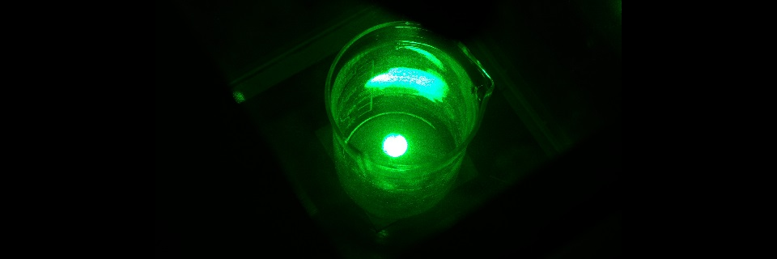

About Me
Hi, I'm Tyler Baxter. Thanks for checking out my portfolio!
I'm a military veteran, physics nerd, gamer, and spoiled cat owner.
Hi, I'm Tyler Baxter. Thanks for checking out my portfolio!
I'm a military veteran, physics nerd, gamer, and spoiled cat owner.

(Don't be fooled by the angelic appearance.)
From Science to Software Engineering
During my undergrad, I was heavily involved in extracurricular scientific research.
My projects spanned the subjects of astrophysics, laser ablation, and material science.
Click here to learn more.
After graduating, I became eager to find somewhere new to put my skills and passion for learning
new things to good use. Since then, I've discovered that joining the world of software engineering
was exactly what I was looking for.
During my undergrad, I was heavily involved in extracurricular scientific research.
My projects spanned the subjects of astrophysics, laser ablation, and material science.
Click here to learn more.
After graduating, I became eager to find somewhere new to put my skills and passion for learning
new things to good use. Since then, I've discovered that joining the world of software engineering
was exactly what I was looking for.
My 2024 GitHub Activity
Projects
Fractional Calculus Computation API
Photo: Vergilius Eremite
This API provides closed-form expressions for derivatives and integrals of polynomials.
Key Features:
-
Works for standard integer-order calculus operations.
-
Users may also request fractional-order derivatives and integrals if desired.
Research
Assessment of an Interstellar
Photon Propulsion Concept
Assessment of an Interstellar Photon Propulsion Concept
 Photo: St. Cloud State University/
Dr. John E. Sinko
Photo: St. Cloud State University/
Dr. John E. Sinko
This research project explored the theoretical performance of a solar sail using a spherical
configuration for purposes of interstellar travel.
Sinko, J. E., Baxter T. (2015).
Assessment of an Interstellar Photon Propulsion Concept.
Proceedings of the Joint Conference of 30th International Symposium
on Space Technology and Science, 34th International Electric Propulsion Conference,
and 6th Nano-satellite Symposium. Hyogo-Kobe, Japan.
Proceedings of the Joint Conference of 30th International Symposium
on Space Technology and Science, 34th International Electric Propulsion Conference,
and 6th Nano-satellite Symposium. Hyogo-Kobe, Japan.
IEPC:
2015-144 / ISTS-2015-b-144
Thrust Assessment for a Laser Tractor Beam Target
 Photo: St. Cloud State University/Gary Bailey
Photo: St. Cloud State University/Gary Bailey
This research project was an experimental development of a 'tractor beam' device that could
be used to retrieve adrift astronauts using laser ablation of chemical powders.
$1000 Grant Funding Award (Spring 2015)
St. Cloud State University
$1000 Grant Funding Award (Fall 2015)
St. Cloud State University
$1000 Grant Funding Award (Spring 2016)
St. Cloud State University
$1000 Grant Funding Award (Fall 2016)
St. Cloud State University
$1000 Grant Funding Award (Spring 2017)
St. Cloud State University
1st Place Winner -
Best Poster Presentation (2016)
St. Cloud State University Student Research Colloquium
Sinko, J. E., Baxter, T., Gill, M., Schlecht, A. C. (2017).
Thrust Assessment for a Laser Tractor Beam Target.
Proceedings of the 53rd AIAA/SAE/ASEE Joint Propulsion Conference.
Atlanta, GA.
DOI:
10.2514/6.2017-4960
Laser-Induced Carbon-Doped Carbonate Propellant Decomposition for Beamed Energy Propulsion

Photo: St. Cloud State University/
Dr. John E. Sinko
This research project was an experimental optimization of the
chemical powder used in the 'Thrust Assessment for a Laser Tractor Beam Target' project.
$1000 Grant Funding Award (Fall 2016)
St. Cloud State University
$1000 Grant Funding Award (Spring 2017)
St. Cloud State University
1st Place Winner -
Best Poster Presentation (2017)
National Council on Undergraduate Research Committee
AIAA Conference Submission PowerPoint (2017)
AIAA Propulsion and Energy Conference, Atlanta GA
Baxter, T., Sinko, J. (2017).
Laser-Induced Carbon-Doped Carbonate Propellant Decomposition
for Beamed Energy Propulsion.
Proceedings of the 53rd AIAA/SAE/ASEE Joint Propulsion Conference.
Atlanta, GA.
DOI:
10.2514/6.2017-4958
Spherical Lens vs. Microlens Array
for Laser Propulsion
Spherical Lens vs. Microlens Array for Laser Propulsion
 Photo: St. Cloud State University/Tyler Baxter
Photo: St. Cloud State University/Tyler Baxter
This research project was an experimental development of using microlens arrays with
the previous laser projects to maximize thrust output levels.
$1000 Grant Funding Award (Fall 2017)
St. Cloud State University
$1000 Grant Funding Award (Spring 2018)
St. Cloud State University
Certificate of Achievement
Minnesota Undergraduate Scholars, St. Paul MN
Certificate of Achievement
Minnesota Undergraduate Scholars, Rochester MN
1st Place Winner -
Best Poster Presentation (2017)
National Council on Undergraduate Research Committee
1st Place Winner -
Outstanding Oral Research Presentation (2018)
7th Annual Minnesota Conference of Undergraduate Scholarly
and Creative Activity
NCUR PowerPoint Submission (2018)
32nd Annual National Council on Undergraduate Research Conference
A Mathematical Analysis of Newton's Laws:
Photonic Drag, Dark Matter, and the Milky Way
A Mathematical Analysis of Newton's Laws:
Photonic Drag, Dark Matter, and the Milky Way
 Photo:
NASA/ESA/Hubble Heritage Team
Photo:
NASA/ESA/Hubble Heritage Team
This research project was a theoretical attempt to find an alternative explanation to dark matter
by introducing a 'photonic drag' term in the classical analysis of Newton's Laws applied to the
Sun as it revolves around the Milky Way.
Research PowerPoint Presentation (2019)
Pi Mu Epsilon Conference, St. John's University
Contact